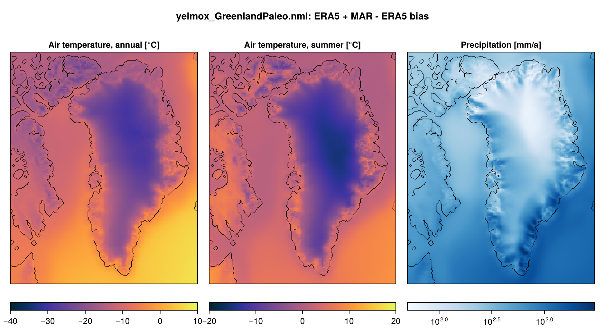
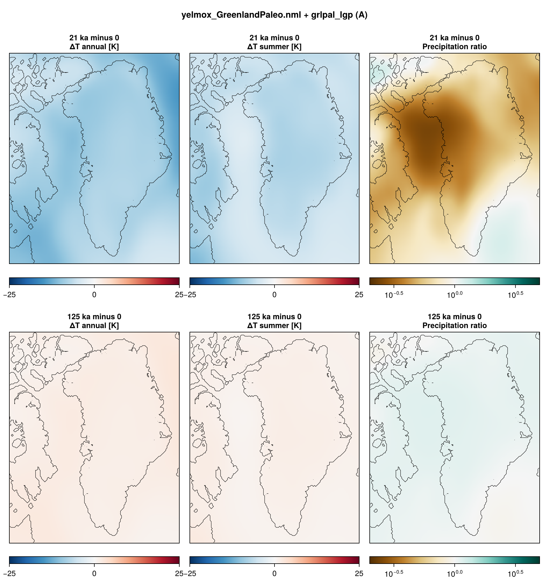
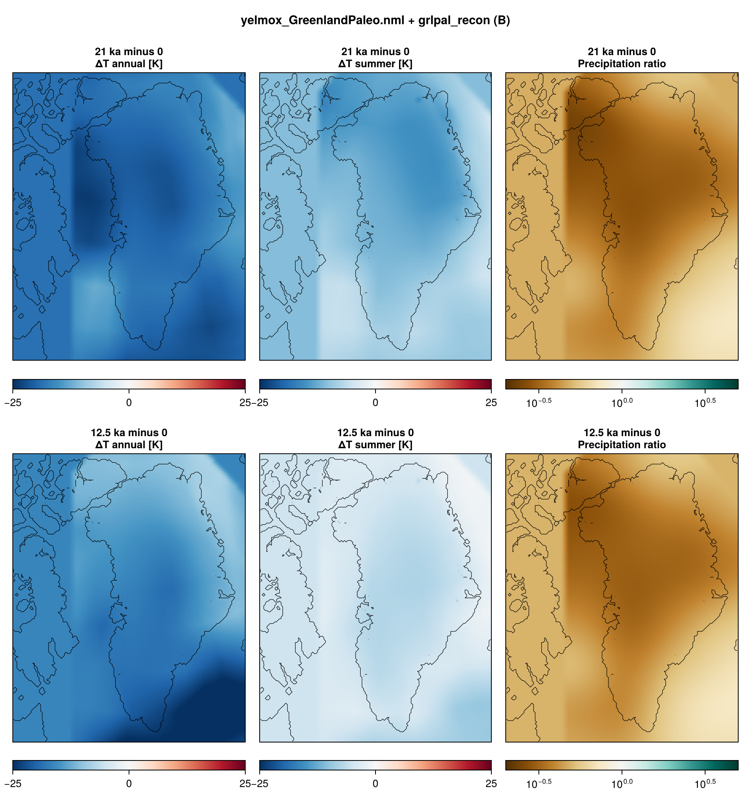
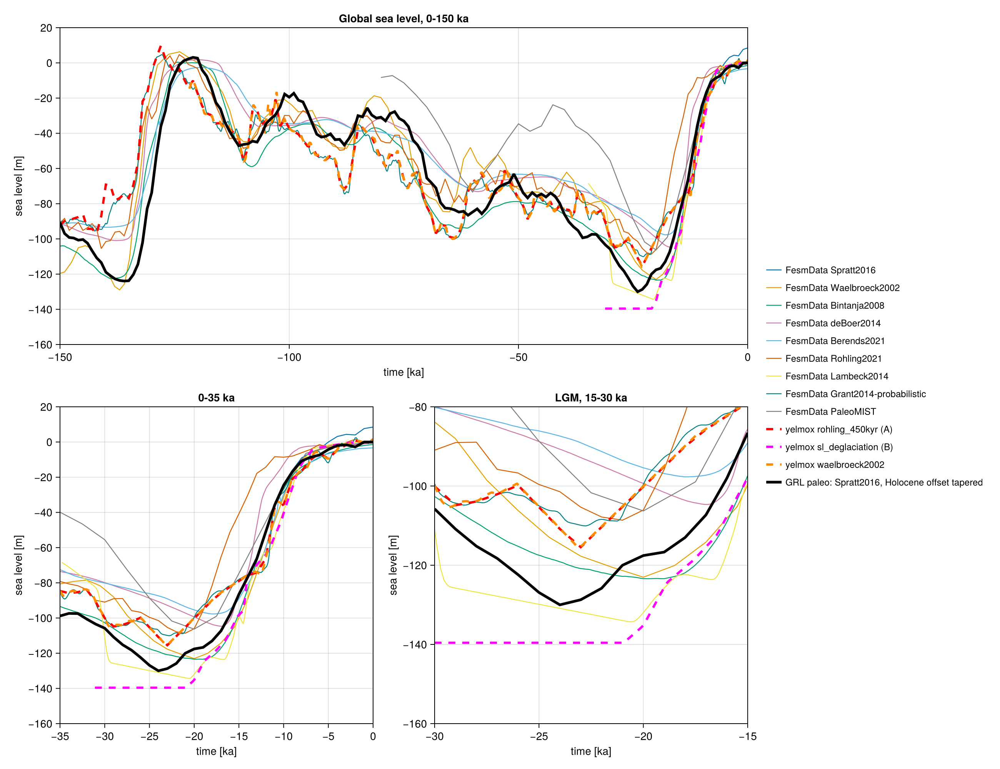

Greenland paleo
Greenland paleo simulations on the GreenlandPaleo domain (GRL-PAL, 16 km), the Greenland domain extended 640 km to the west (Ellesmere, Devon Island, Baffin Bay). Two setups, without optimization of the basal friction or the ocean thermal forcing:
A. Last glacial period, as the Antarctic paleo: a 15-kyr present-day spin-up, then a transient from 130 kyr ago to the present, restarted from the spin-up, with the climate scaled by a glacial index.
B. Deglaciation after Tabone et al. (2024): an LGM spin-up from GLAC-1D, then a transient from 21 ka to the present forced by the Greenland climate reconstructions of Buizert et al. (2018, temperature) and Badgeley et al. (2020, precipitation).
Program:
yelmox(make yelmox) with the snapshot backend ([comps] climate = "snapshots", see Snapshots).Config:
yelmox/yelmox_GreenlandPaleo.nml(base of A and B).Scripts:
scripts/grl-paleo/: Arun_spinup.sh,run_lgp.sh; Brun_lgm_spinup.sh,run_deglac.sh. The forcing is set with-p:scripts/grl-paleo/params.sh(grlpal_lgpfor A,grlpal_reconfor B).Design:
docs/_grl-paleo-plan.md.
Running
Run from the yelmox root; each transient needs the last restart bundle of its spin-up.
A:
scripts/grl-paleo/run_spinup.shscripts/grl-paleo/run_lgp.shB:
scripts/grl-paleo/run_lgm_spinup.shscripts/grl-paleo/run_deglac.shrun_spinup.sh [output_path] writes to output/grl-paleo/spinup by default, run_lgm_spinup.sh [output_path] to output/grl-paleo/lgm. run_lgp.sh [spinup_path] [output_path] restarts from <spinup_path>/restart-15.000-kyr and writes to output/grl-paleo/lgp; run_deglac.sh [lgm_path] [output_path] restarts from <lgm_path>/restart-20.000-kyr and writes to output/grl-paleo/deglac (the bundles are passed as absolute paths; the scripts stop if one is missing). All submit to the shared queue (2 days, 10 GB, no OpenMP). On a busy cluster, run them as chains of short jobs instead: Long runs in chunks has the commands.
Domain borders
The west border cuts Baffin Island and the Canadian Arctic Archipelago, where Innuitian and Laurentide ice crosses it in glacial periods. The borders are “infinite” ([yelmo] experiment = "infinite", mask_border = "dynamic"): the outermost cells take the thickness of their inner neighbours, so the border ice thickens and thins with the interior. Ice flows out through the border but not in (the outflow is booked in mb_resid): the ice west of the border is what the local climate builds. Before Yelmo fixed this (2026-10-19), the border cells fed the interior wherever the flow pointed inwards, without limit and unbooked; in the first B LGM spin-up this inflow grew exponentially (above the domain SMB after ~8 kyr) and piled ice up to 10 km at the front in northern Baffin Bay.
Prescribed border ice is the alternative (not used now): a strip of fixed and relaxation cells ([yelmo_masks] border_width = N M, e.g. 2 4) whose thickness comes from an ice history ([ice_bnd] active = True, PaleoMIST by default), with experiment = "None", mask_border = "auto" and [ytopo] topo_rel = -1.
Reference climate
ERA5 1981–2010 (monthly) is the present-day reference on the whole domain; MAR v3.14 covers only Greenland. Over Greenland, [bias] corrects ERA5 to MAR 1981–2010 with a monthly temperature difference dtas and precipitation factor fpr, both taken at sea level with the reduction of the snapshot backend ([snap] lapse, f_p), so they do not depend on elevation. Outside the MAR coverage the correction is the nearest value of the bias smoothed over 50 km, tapered to zero over 100 km (cosine). fpr is clamped to [0.2, 5].
The product is a hand-built file in ice_data, ice_data/GreenlandPaleo/GRL-PAL-16KM/GRL-PAL-16KM_BIAS-MARv3.14-ERA5-1981-2010.nc (clim_db.nml groups bias_mar_era5_1981_2010_dtas, _fpr), made by
julia --project=scripts/grl-paleo scripts/grl-paleo/make_bias_mar_era5.jl --figfrom the yelmox root (fesmdata and ice_data links in place; options --res, --l1, --l2, --f_p, --D, --sigma, --fpr_min, --fpr_max). The lapse rates and f_p are written as attributes: remake the file when [snap] lapse or f_p change.

A. Spin-up
- Timeline:
[ctrl]0 to 15 kyr,dtt = 10yr, present-day insolation ([orbit] method = "time",time = 0), sea level from file at 0 ka. - No optimization (
[sim] opt = False); the ice thickness relaxes towards the observations until 6 kyr ([sim] relax = True,[relax] time2). - Climate: present day (
[snap] snapshots = "pd") with the MAR – ERA5 bias. - Output: restart bundles at 0 and 15 kyr; 2D output every 1 kyr.
A. Transient
- Timeline:
[ctrl]-130 kyr to 0,dtt = 10yr, on relative time (tstep_method = "rel").[sim] relax = False,opt = False. - Climate: snapshots
pd,picontrol,lgmand the axisa([snap_axis_a]): the present-day reference plus the PMIP3 LGM – piControl anomaly, scaled by the glacial index[idx_a](input/alpha_combined_125kyr_interp.dat, as is: 0 = present day, ~0.9 at 21 ka, -0.2 in the last interglacial). The ocean anomaly isf_to = 0.25times the mean sea-level air temperature anomaly ([ocn_fraction]). Insolation varies in time ([orbit] method = "clock"). - Sea level:
[barysealevel] method = "file",input/sealevel_spratt2016.dat.

- Ice age: isochrones with elsa (
[ytrc] use_elsa,[elsa_grl_lgp]ofinput/forcing_db.nml): one layer every 1 kyr, coupled every 50 yr (for comparison with MacGregor et al., 2025). - Output: 2D every 1 kyr, 1D every 100 yr, restart bundles every 25 kyr.
B. Reconstruction forcing
Snapshots pd, b18_base, b18, b20 and two axes at a constant index one ([idx_one], 1), each field bound to one axis:
- Temperature, axis
b18([snap_field_tas] axes): the Buizert et al.- monthly reconstruction (
snap_b18, decadal, 22 ka to 2005 CE) minus its 1981–2010 baseline (snap_b18_base), both at the reconstruction’s elevation.
- monthly reconstruction (
- Precipitation, axis
b20([snap_field_pr] axes,blend = "ratio"): the Badgeley et al. (2020) fraction relative to 1850–2000 CE (snap_b20,lo = "": the hi is the ratio itself; 50-yr means, 20 ka to 0; annual, the same factor in every month).b20_pr_frac_low/_highare the other accumulation scenarios.
Swapping the axes of the two fields gives the other combinations (Badgeley temperature: its annual anomaly in every month). The time-varying groups are read in time on the forcing clock (extrap: the first slice before the record starts, e.g. Badgeley at 20 ka during the LGM spin-up).
The reconstructions are GRL-16KM products, remapped online onto GRL-PAL and filled from the nearest cell outside the GRL box. [taper] with outside = "mean" replaces the anomaly there by the mean anomaly of the coverage (per month: the temperature difference and the precipitation ratio of the totals, recomputed at every climate update): w = 1 in the coverage of both, a cosine to 0 over 100 km (hand-built file ice_data/GreenlandPaleo/GRL-PAL-16KM/GRL-PAL-16KM_TAPER-Buizert2018-Badgeley2020.nc, clim_db.nml group taper_b18_b20, made by scripts/grl-paleo/make_taper_recon.jl). West of it (Ellesmere, Baffin Bay) the climate is the present-day reference plus that mean anomaly.
The ocean anomaly is f_to = 0.25 times the mean sea-level air temperature anomaly ([ocn_fraction]); sea level from input/sealevel_spratt2016.dat (as A); insolation at the forcing clock ([orbit] method = "clock"). The climate is updated every 100 yr (dt_clim; the reconstructions are read and remapped from GRL-16KM at each update, which made 10 yr six times slower).

B. LGM spin-up
- Timeline:
[ctrl]0 to 20 kyr, the forcing held at 21 ka (tstep_method = "const",tstep_const = -21e3): reconstructions, insolation and sea level of 21 ka. - Initial ice: GLAC-1D at 21 ka on the whole domain (
[sim] init_method = "recon",recon_time = -21e3,recon_regions = "all"), cold start. - Output: restart bundles at 0 and 20 kyr; 2D output every 1 kyr.
B. Transient
- Timeline:
[ctrl]-21 ka to 0, on relative time, restarted from the LGM spin-up. - Ice age: isochrones with elsa (
[elsa_grl_deglac]): one layer every 500 yr. - Output: 2D every 500 yr, 1D every 10 yr, restart bundles every 7 kyr.
Configuration common to all
| Grids | GRL-PAL-16KM for every component |
| Topography | BedMachine v6 (GRL-PAL-16KM_TOPO-BedMachine-v6.nc) |
Reference climate (snap_pd) |
ERA5 1981–2010 + MAR – ERA5 bias over Greenland ([bias]); ocean ORAS5 1981–2010 |
Snapshots (snap_picontrol, snap_lgm) |
PMIP3 piControl and LGM ensemble means, global (GLOBAL-1DEG, remapped, 50 km smoothing; atmosphere only, the ocean follows [ocn_fraction]) |
| Surface mass balance | chion ([comps] surface_method = "chion") |
| Shelf melt | bmb_method = "lin", tf_method = 1 |
| Dynamics | DIVA, nz_aa = 10, grad_lim = 0.1 |
| Basal friction | no optimization; cb_ref scaled linearly with bed elevation ([ytill] scale_zb = 1, cf_ref = 0.5 above 300 m, cf_min = 1e-3 below -500 m); till_delta = 0.1, bkt_till_rate = 1e-3 |
| Calving | level set, von Mises (calv_flt_method = calv_grnd_method = "vm-m16") |
| Frontal melt | proportional to the shelf melt (fmb_method = 1) |
| Deep ocean | c_deep = -10 m/yr below 2000 m in the open ocean (mask_deep_ocean = "zone:open_ocean") |
| Geothermal heat flux | Fox Maule et al. (2005) ([ghf] use_obs = True) |
| Sea level | Spratt and Lisiecki (2016), short stack, its +8.5 m at 0 ka removed linearly over 0-10 ka (input/sealevel_spratt2016.dat, made by scripts/grl-paleo/make_sealevel_spratt2016.jl from FesmData SeaLevel-Spratt2016): -120 m at 21 ka, -130 m at 24 ka (A and B) |
| Isostasy | FastIsostasy LV-ELVA, two uniform mantle layers (88 and 600 km, 1e21 and 2e21 Pa s, as ISMIP7 GRL; the GRL-PAL Lloyd2024 file does not have the layout of rheology_file) |
| Borders | “infinite” (see above) |
Sea level
A and B use the same global sea level, input/sealevel_spratt2016.dat: the short stack of Spratt and Lisiecki (2016) (seven reconstructions, 0–430 ka, 1 kyr, LR04 ages), from FesmData Records/SeaLevel/SeaLevel-Spratt2016. The stack is +8.5 m at the present, an offset that builds up in the Holocene; it is removed with a weight that decreases linearly from 1 at 0 ka to 0 at 10 ka, so the curve is 0 at the present and the stack itself before 10 ka (-120 m at 21 ka, -130 m at 24 ka, -124 m at 135 ka). The stack covers the whole glacial cycle with an LGM close to Lambeck et al. (2014); its early deglaciation (22–16 ka) leads Lambeck et al. (2014) and the Red Sea record by 1–2 kyr. The former curves were input/sealevel_rohling_450kyr.dat for A, close to the Red Sea record of Grant et al. (2014) (-105 m at 21 ka), and input/sl_deglaciation.dat for B (Lambeck-like after 21 ka, -140 m held before). File made by scripts/grl-paleo/make_sealevel_spratt2016.jl, figure by scripts/grl-paleo/plot_sealevel.jl.
